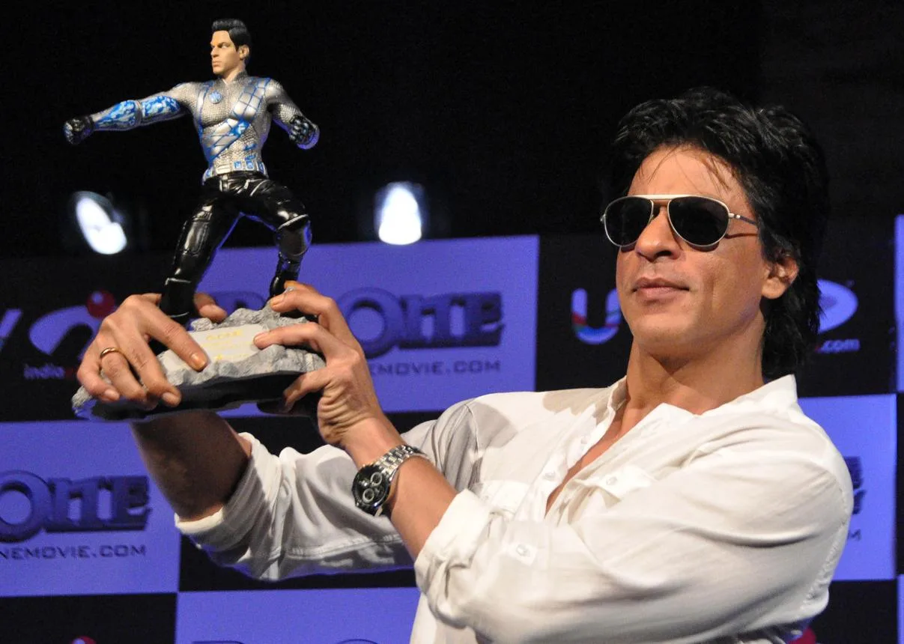
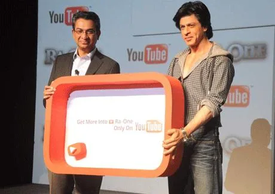

The Final Thesis · section 20 of 92
PART I — THE ARCHITECT OF A DIGITAL KINGDOM
2010–2012: When Bollywood stopped being only about the film



5
2010 — My Name Is Khan: The star as a global event
In 2010, Shah Rukh Khan's My Name Is Khan demonstrated how a Hindi film could be marketed as a global cultural event.
The campaign extended beyond conventional film advertising. Its trailer was broadcast simultaneously across leading television channels using a roadblock strategy. Khan and Kajol rang the NASDAQ opening bell during the film's international promotional activity, while Reebok introduced a dedicated footwear and apparel collection.

en.wikipedia.org
The significance was not simply the scale of the advertising.
It was the recognition that Shah Rukh Khan could function simultaneously as actor, cultural ambassador, commercial partner and global media property.
The film was the product. The star was the platform.
But a platform has a different economic and creative potential from a film.
A film has a release date. A platform can keep generating experiences, relationships, products and stories long after the opening weekend.
That distinction would become central to the next stage of Khan's career.
2011 — Ra.One: The birth of the Bollywood superhero ecosystem
If My Name Is Khan demonstrated the international reach of Shah Rukh Khan, Ra.One attempted something considerably more ambitious: the construction of an entertainment ecosystem around an Indian superhero.
The project combined filmmaking, visual effects, merchandising, gaming, brand partnerships, digital distribution and character development.
The 2012 FICCI-KPMG media report documented the scale of the experiment. It described an extensive marketing campaign that began months before release, significant brand participation, a dedicated film website, an online store with 64 original merchandise items, a character style guide, a graphic novel and a social-media action game adapted for multiple platforms.
The metamorphosis begins
G.ONE was not simply a costume worn by Shah Rukh Khan.
The character had the foundations of an independently recognisable intellectual property: a visual identity, a merchandise language, a narrative world and the potential to travel between media.
The campaign also involved technology partnerships and the adaptation of the gaming experience across devices and distribution channels.
In an era when many Indian film campaigns still treated the internet as a place to upload trailers, Ra.One treated digital media as part of the product itself.
That was the important distinction.
The ambition was to move from selling tickets to building a universe.
The film's commercial and creative results can be debated. Its historical importance as a digital and merchandising experiment is a separate question.
A franchise is not established simply because a film introduces a character. It requires continuity, rights management, investment, distribution, audience participation and a willingness to develop the intellectual property beyond the original production.
Ra.One placed those questions directly on the table for Indian cinema.
And it introduced an idea that would resurface repeatedly in the years that followed: fans could become participants in a fictional world, rather than merely consumers of a finished film.
2012 — Don 2 and Jab Tak Hai Jaan: Two different relationships with the audience
The following year presented a contrast.
Don 2 extended an established character-led franchise through trailers, digital content and international promotion. Its marketing drew upon the recognisability of Don and the appeal of a continuing cinematic identity.
Jab Tak Hai Jaan, by contrast, relied more heavily on the traditional emotional vocabulary of a major Hindi romantic drama: its stars, music, romance, publicity and the enduring association between Shah Rukh Khan and the romantic hero.
These were not competing definitions of success. They were different commercial models.
One treated a character as a continuing entertainment property. The other drew upon a cultural relationship between an actor and an audience that had developed over decades.
The lesson was that Khan's appeal was not confined to one genre, one character or one promotional technique.
He could sell a universe. He could sell a love story. And he could bring both to a global audience.
The next year would reveal what happened when the digital universe and the emotional power of fandom were combined.